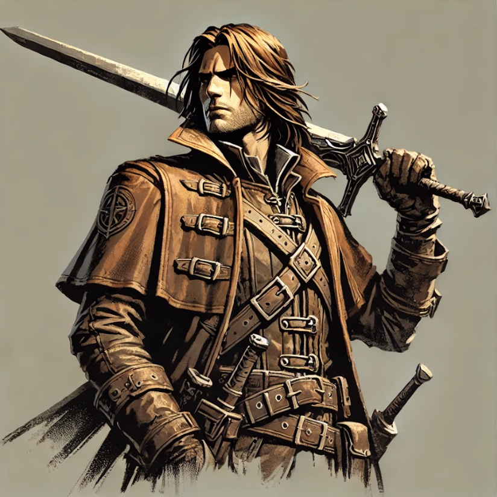
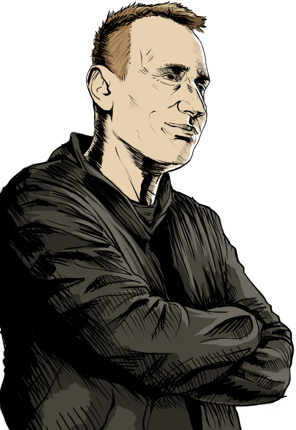

A projektről
A Wrath Hound egy 2D indie fejlesztésű kalandjáték, amely a régi klasszikusok hangulatát ötvözi
egy friss és izgalmas élménnyel. A játékosokat egy sötét fantasy világba vezeti, ahol démonokkal
és rejtett titkokkal teli helyszínek várják őket. A dinamikus harcrendszer és a lenyűgöző pixel
art grafika egy felejthetetlen kalandot kínál. Fedezd fel a világot, harcolj szörnyekkel és
gyűjts erősebb fegyvereket, miközben a kaland izgalmas kihívásokat tartogat.


A történet főszereplője Baldwin Morgrave, egy elszánt démonvadász, aki küldetésen jár, hogy
szembeszálljon a démonok hordaival. Mindezt egy magasztos cél vezérli: megmenteni édesanyját, akit
elraboltak a démonok. A démonok, miután kiszabadultak a száműzetésükből, falvakat pusztítanak el és
embereket hurcolnak el, mindezt Isméras, a Bukott Angyal vezetésével. Baldwin számára azonban nem
csupán egy szimpla harcról van szó – a démonok támadásai egyre közelebb hozzák őt az édesanyja
sorsához, aki egy ilyen portya áldozata lett.
A világ, ahol Baldwin él, tele van veszéllyel és rejtett titkokkal, és minden egyes megölni kívánt
démon egy újabb lépést jelent az édesanyja megmentéséhez vezető úton. A harc során nemcsak a
démonokkal, hanem saját hitével és belső démonaival is meg kell küzdenie, miközben egyre közelebb
kerül a végső összecsapáshoz.